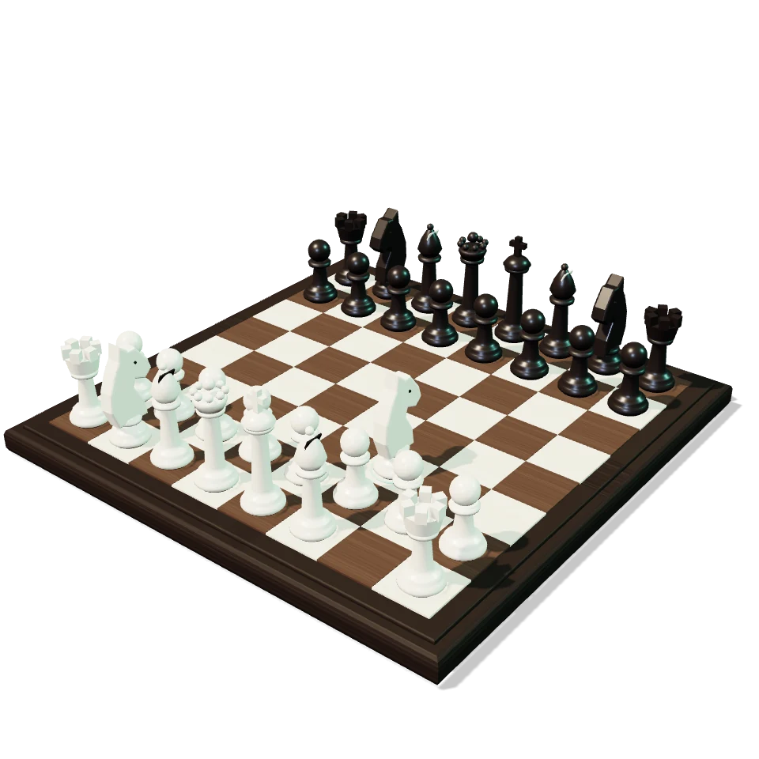

1. Comprende
Escucha a Mauro y descubre un concepto a la vez.
Academia online con entrenamiento progresivo, clases grupales, partidas comentadas, táctica real y estrategia moderna. Explora 14 módulos y 293 temas planificados, con 4 clases disponibles para empezar.

Escucha a Mauro y descubre un concepto a la vez.
Explora el tablero y resuelve actividades guiadas.
Revisa tu avance y vuelve a la siguiente clase.
Comienza con qué es el ajedrez, el tablero, las filas y las columnas. El programa completo queda disponible para explorar; los temas en preparación están señalados.
Explorar los 14 módulos →Clases interactivas y progreso en este dispositivo. Consulta la disponibilidad y las condiciones de acceso en la ruta.
Ir a Mi aprendizajeConsulta las clases grupales, frecuencias y planes de entrenamiento de la academia.
Ver clases y planesExplora posiciones y practica los movimientos de las piezas.
Abrir PrácticaConsulta una clase de evaluación y encuentra el programa adecuado para ti.
Consultar una claseConoce los programas, la metodología, la comunidad y las preguntas frecuentes.
Ver información completa · Consultar la presentación anterior del programa